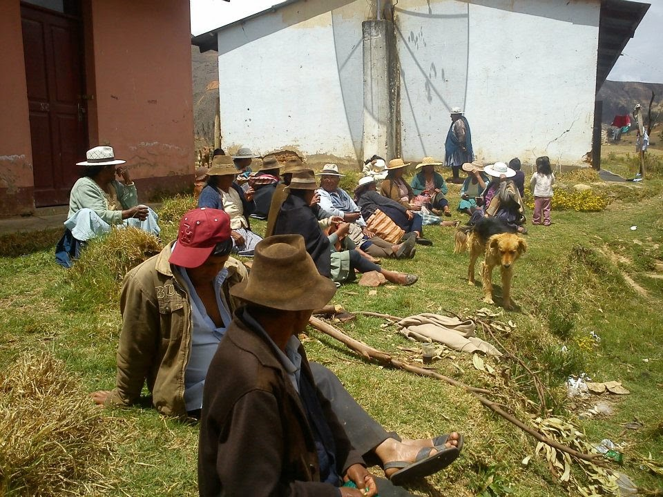
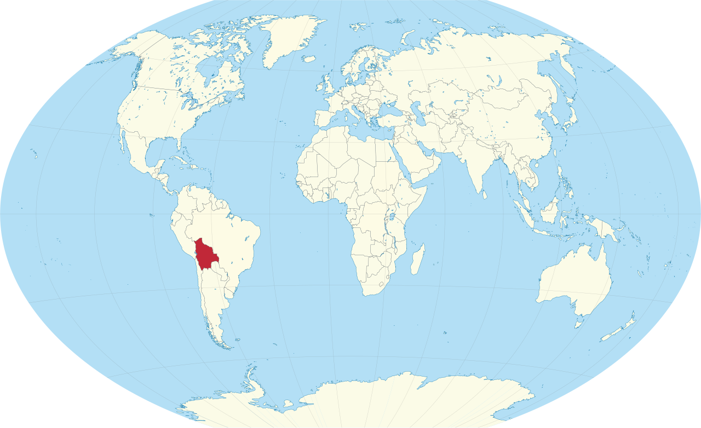
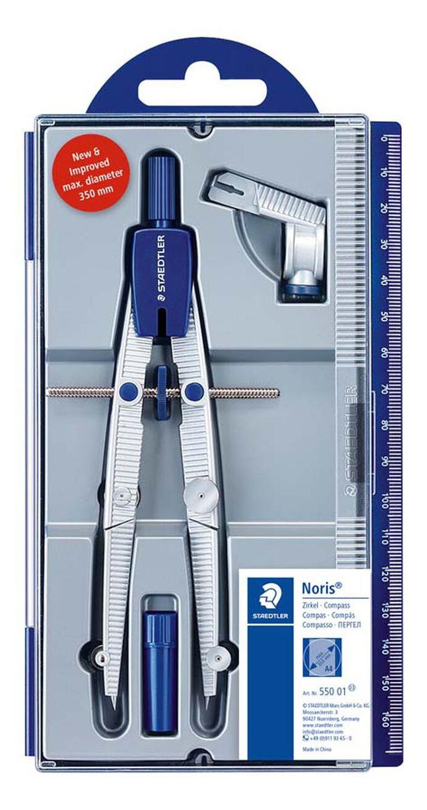
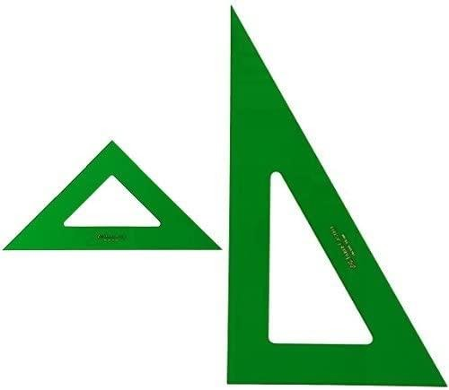
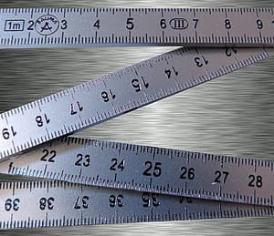

Pocona: Enginyeria que canvia el món
«Com pot l'enginyeria trencar l'aïllament extrem d'una comunitat andina per garantir drets fonamentals com la salut, l'educació i la comunicació?»
El Repte a Pocona
Aquest projecte didàctic està basat en una intervenció real de cooperació internacional impulsada per l'ONG Enginyeria Sense Fronteres (ESF) al municipi de Pocona, situat a la província de Carrasco (Departament de Cochabamba, Bolívia).
Pocona es caracteritza per una orografia d'alta muntanya andina amb altituds compreses entre els 2.200 m i més de 3.600 m sobre el nivell del mar. La gran majoria de la població viu dispersa en petits poblets camperols (ayllus i comunitats rurals). La manca d'infraestructures de comunicació fa que qualsevol emergència sanitària, un part complicat o una malaltia sobtada impliqui hores de camí a peu o en camió fins a l'ambulatori més proper.
Com a equip tècnic, la nostra missió serà dissenyar un sistema autònom de radiocomunicacions per connectar les escoles i els centres de salut locals amb l'hospital de referència.
Aquest és un projecte real fet per l'ONG Enginyeria Sense Fronteres (ESF) a Pocona, un municipi rural de Bolívia (Amèrica del Sud) situat a dalt de tot dels Andes, a més de 3.000 metres d'alçada.
- 🏔️ El territori: Les cases i les escoles estan molt separades per muntanyes i camins de terra costeruts.
- 📵 El problema greu: No hi ha cobertura de telèfon ni internet. Si algú es posa malalt, han de caminar hores per demanar ajuda a un metge.
- 🎯 La nostra missió: Com a equip d'enginyers d'ESF, dissenyarem una xarxa d'antenes sense fils per connectar el centre de salut i les escoles amb l'hospital!

Comunitat rural de Pocona (Cochabamba, Bolívia). Fes clic per ampliar.
Un Projecte Real: Què és Enginyeria Sense Fronteres (ESF)?
Tot el repte tècnic i educatiu que desenvoluparàs al llarg d'aquesta plataforma està basat en un cas completament real: un projecte de cooperació internacional que l'ONG Enginyeria Sense Fronteres (ESF) va dur a terme a la província de Carrasco (Bolívia) per connectar mitjançant telecomunicacions comunitàries el municipi rural de Pocona.
Què és exactament Enginyeria Sense Fronteres (ESF)? És una organització no governamental de cooperació per al desenvolupament (ONGD) integrada per professionals, docents i estudiants de l'enginyeria, la ciència i la tecnologia. La seva missió central és posar el coneixement tècnic al servei dels drets humans, la justícia social i la sostenibilitat, garantint que la tecnologia serveixi per emancipar les persones i no pas per augmentar les desigualtats o buscar el lucre mercantil.
En aquest projecte real a Pocona, ESF no va actuar com una empresa comercial convencional («arribar, vendre màquines i marxar»), sinó aplicant els pilars de la cooperació transformadora:
Considera l'accés a l'aigua potable, l'energia neta i les telecomunicacions com a drets universals imprescindibles per a una vida digna.
Dissenya solucions robustes, econòmiques i amb recanvis locals, adaptades a l'alta muntanya andina i alimentades per energia solar.
Capacita tècnicament el veïnat i el jovent local perquè la comunitat sigui l'única propietària i gestora autònoma de la seva xarxa.
A Pocona, l'equip d'ESF va treballar colze a colze amb les comunitats camperoles, l'alcaldia i el personal sanitari per fer realitat aquesta xarxa comunitària, demostrant que l'enginyeria és una eina directa de transformació social.
Aquest projecte que farem a classe és una història 100% real! Va ser un projecte d'enginyeria autèntic que va dur a terme l'ONG Enginyeria Sense Fronteres (ESF) per portar per primera vegada comunicació i Internet a les famílies, escoles i centres de salut del poble de Pocona (Bolívia).
I qui són Enginyeria Sense Fronteres (ESF)? Són una ONG formada per persones de la ciència i la tecnologia (enginyers, enginyeres i voluntaris) que utilitzen els seus coneixements tècnics per defensar i ajudar els pobles més aïllats del planeta a través d'aquests valors:
Defensen que tothom té dret a tenir aigua neta, llum i internet per anar a l'escola i trucar al metge d'urgència.
No van al poble a "donar ordres", sinó que escolten què necessiten les famílies i ho decideixen tot junts.
Ensenyen als joves del poble a reparar les antenes perquè la xarxa funcioni sempre sense dependre de ningú de fora.
Durant aquestes sessions tu també et posaràs a la pell d'un enginyer o enginyera d'ESF per resoldre aquest repte real!
Situem el Territori: On és Bolívia?
Per entendre l'aïllament i el repte d'enginyeria de Pocona, primer cal situar-nos geogràficament: Bolívia (oficialment Estat Plurinacional de Bolívia) es troba al cor d'Amèrica del Sud. És un país sense litoral marítim directe, amb una topografia fascinant i extrema dominada per la serralada dels Andes a l'oest i les planes de l'Amazònia i el Chaco a l'est.
Abans de començar a dissenyar antenes, hem de saber on som: Bolívia està situada al bell mig d'Amèrica del Sud. És un país sense costa al mar, travessat per muntanyes immenses (els Andes) que fan que les comunicacions siguin un autèntic desafiament!

Bolívia a Amèrica del Sud: País central andino-amazònic, fronterer amb el Brasil, el Perú, Xile, l'Argentina i el Paraguai. Fes clic per ampliar.
📌 Fitxa Clau del País per a l'Equip Tècnic
💡 Preguntes d'Indagació per començar a pensar com enginyers:
- Per què les grans operadores comercials de telefonia mòbil no instal·len antenes en pobles aïllats com Pocona?
- Quina diferència hi ha entre enviar un tècnic a instal·lar una torre comercial i empoderar la comunitat local perquè la construeixi i en faci el manteniment?
- Com ens poden ajudar les eines de matemàtiques i el dibuix tècnic a l'hora de dissenyar una xarxa de comunicacions que superi les muntanyes?
- 💰 Per què les grans companyies de mòbil no posen antenes a Pocona? (Pensa si hi guanyen prou diners o si els surt massa car).
- 🤝 Què és millor: portar un aparell comprat i marxar, o ensenyar a la gent del poble com funciona perquè el puguin cuidar ells mateixos?
- 📐 Com ens ajuden els mapes i les matemàtiques a saber on col·locar la torre perquè el senyal arribi a tot arreu?
Objectius d'Aprenentatge Competencials
Analitzar situacions de la vida real al Sud global per proposar solucions sostenibles, respectuoses amb la cultura local i ecològicament viables.
Utilitzar el Teorema de Pitàgores, les mediatrius, els circumcentres i el càlcul d'escales cartogràfiques per resoldre problemes topogràfics reals.
Comprendre el comportament dels esforços de tracció i compressió en torres ventades arriostrades davant la força del vent.
Distingir el funcionament dels enllaços direccionals i omnidireccionals WiMAX, i programar microcontroladors per transmetre dades.
Sintetitzar i comunicar les solucions tècniques mitjançant un pòster divulgatiu d'impacte adreçat a la comunitat.
Aprendre com l'enginyeria resol problemes reals de la gent d'un poble, respectant la seva cultura i el medi ambient.
Fer servir regles, mapes i triangles per mesurar distàncies reals i trobar el millor lloc per a l'antena.
Aprendre a subjectar la torre amb cables d'acer ben equilibrats perquè les fortes ventades no la tombin.
Entendre com viatja el senyal per l'aire per portar internet i trucades mèdiques a l'escola i a l'ambulatori.
Crear un pòster clar i bonic per ensenyar a la classe i al poble com hem aconseguit connectar Pocona.
Materials de Taller i Dibuix Tècnic

Per determinar circumferències de cobertura i traçar mediatrius amb precisió mil·limètrica.

Per dibuixar rectes perpendiculars i paral·leles exactes en els traçats dels perfils de terreny.

Per mesurar distàncies directament sobre els plànols topogràfics en format A3.
Avaluació Inicial: KPSI Pocona
Abans de començar, valora amb sinceritat què saps sobre telecomunicacions, topografia i cooperació: